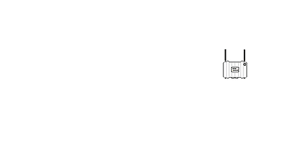

Wireless community network
Dove???, XX ottobre 2014
Cos'è una Wireless Community Network?
è fatta di persone prima che di cose!
è una rete di telecomunicazioni
Caratteristiche:
- la proprietà è di tutti
- libera e decentralizzata
- non è gerarchica, ma paritaria e neutrale
- utilizza frequenze libere (2.4, 5, 17, 24GHz)
- nessun servizio è garantito, però funziona!
Accettiamo il PicoPeering Agreement, per un processo di interconnessione globale
Com'è fatta la rete?
- Nodi (la struttura)
- backbone
- foglia
- Clients (gli utilizzatori)
- smartphone, tablet
- notebook, pc
- server
- Servizi
- p2p, voip
- http, ftp, smb, nfs
- videosorveglianza, streaming
Quali tipi di collegamenti utilizzate?
Wireless
- punto - punto (sta/ap)
- punto - multipunto (sta/ap)
- mesh (802.11s, adhoc)
Cavo
- ethernet
- fibra
Ma cosa sono i collegamenti mesh?
- ogni nodo è collegato a due o più vicini
- antenne omnidirezionali in modalità 802.11s o adhoc
Ma conviene fare una mesh?
Vantaggi
- costi contenuti
- facilità di espansione
- facilità di monitoraggio
Svantaggi
- perdita di banda esponenziale al numero di hop
- perdita di segnale sulla lunga distanza
- interferenze/overlapping
Alla fine si fanno reti miste
- punto-punto-multipunto sulle lunghe distanze
- mesh sulle brevi distanze, fino 1km

Chi decide la strada migliore per raggiungere un servizio?
Ricorda: non c'è gerarchia e passaggi obbligati
Routing a terra
- Apparati sui tetti hanno il firmware ap/sta
- L'apparato a terra conosce la topologia della rete
Vantaggi
- Migliori performance (radio drivers proprietari)
- Generalmente problemi solo nel router a terra
Svantaggi
- Se problemi nel router a terra il nodo è down
- Difficoltà di setup (quali nodi in ap/sta?)
Routing sui tetti
- Apparati con firmware che supporta 802.11s o adhoc
- Ogni apparato conosce tutta la topologia della rete
Vantaggi
- Facilità di setup (unico firmware autoconfigurante)
- Resilienza
Svantaggi
- Banda inversamente proporzionale al numero di hop
Hardware


Software
- RouterOs
- AirOs
- OpenWrt
Il firmware opensource più promettente?

L2: batman-adv
L3: bmx6
Ma quanto sono diffuse le Wireless Community Network?

FVG: iulii.net

Italia: Roma ninux.org
Ma Ninux è anche a Pisa, Verona, Vicenza, Bologna, Reggio Calabbria, Catanzaro, Mistretta, Vittoria, ecc.

Europa: Barcellona guifi.net
Ma anche Freifunk, FunkFeuer, Wlan-lj, Awmn
Quanto Costa?
- ~100€ per un nodo foglia con un solo apparato
- ~6€/anno corrente elettrica, 5W per apparato (ed il fotovoltaico?)
È legale?
- Nel 2012 abolizione decreto Pisanu wiki.ninux.org/LeggiWireless
- Rispettare le potenze di emissione delle antenne
- Condividere l'ADSL non è illegale, ma può violare l'EULA del tuo ISP
Come posso partecipare?
- Segna la posizione del tuo nodo potenziale su map.ninux.org
- Presentati alla comunità:
- Leggi la documentazione:
Perchè un radioamatore dovrebbe entrare in ninux?
- Dovrebbe condividere anche con chi non è radioamatore la necessità di avere una rete libera, senza censura ed autogestita
- Si presuppone disponga di un impianto domestico (palistica, ecc.) atto ad ospitare nuovi apparati
- Può mettere a disposizione della comunità consigli e capacità per l'autocostruzione di antenne
- Nozioni radiantistiche (Fresnell, morfologia, ecc.)
Grazie dell'attenzione, domande?
email: contatti@ninux.org - info@iulii.net
social: twitter.com/iuliinet - facebook.com/iuliinet